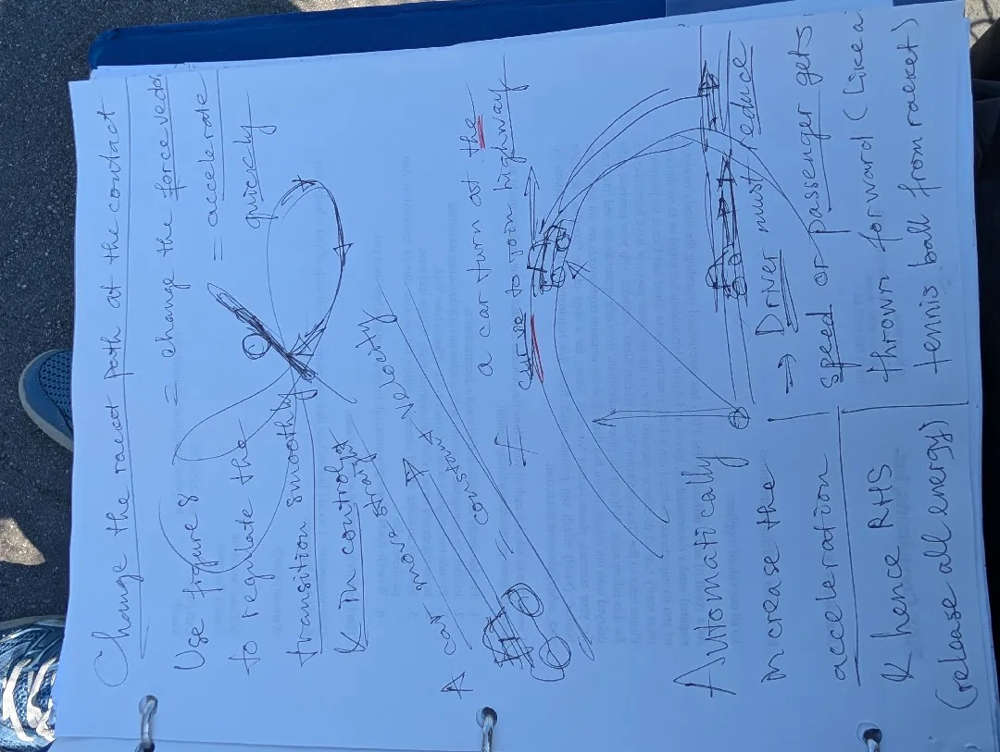

Sinh Cơ Học: Động Lực Học Vector Lực & Kỹ Thuật Forehand Hình Số 8 Nằm Ngang
Ứng Dụng Tương Tác: Vector Lực & Quỹ Đạo Forehand Hình Số 8
Trải nghiệm mô hình vector 3D động, dòng thời gian chuỗi động học thời gian thực, công cụ tính lực hướng tâm vật lý và tải trọn gói bộ hồ sơ phân tích ZIP.
Tiên Đề Sinh Cơ Học Cốt Lõi: Trong quần vợt đỉnh cao hiện đại, quỹ đạo đầu vợt cú thuận tay (forehand) không phải là một đường thẳng đẩy tới hay một cú quạt ngang biệt lập, mà là một quỹ đạo hình số 8 nằm ngang liên tục (vòng vô cực $\infty$). Chuyển động đường thẳng mang gia tốc ngang bằng 0 ($a = 0$), buộc cây vợt phải dừng khựng lại khi đổi chiều. Ngược lại, quỹ đạo cong hình số 8 khai thác lực hướng tâm liên tục ($F_c = \frac{m \cdot v^2}{r}$), đổi hướng vector lực mượt mà và giải phóng tốc độ đầu vợt (RHS) bùng nổ.
1. Động Lực Học Vector Lực: Tuyến Tính Thẳng vs. Quỹ Đạo Cong Số 8
Trong phương pháp huấn luyện cổ điển, người chơi thường được dạy mở vợt thẳng ra sau rồi đẩy thẳng về phía trước. Dưới góc độ cơ học cổ điển, chuyển động thẳng đòi hỏi cây vợt phải giảm tốc độ về điểm chết tuyệt đối ($v = 0$) tại điểm cuối của cú mở. Việc kích hoạt lại từ trạng thái dừng đòi hỏi các nhóm cơ trước ngực và bắp tay phải gồng cứng, làm triệt tiêu tính đàn hồi tự nhiên.
Phép So Sánh Xe Ô Tô Nhập Làn Cua Cao Tốc
Hãy hình dung một chiếc xe hơi đang chạy vào đường vòng cua để nhập làn cao tốc. Khi đánh lái ôm cua, lực hướng tâm xuất hiện hướng vào tâm quỹ đạo, và người ngồi trong xe sẽ cảm nhận rõ quán tính ly tâm kéo văng ra ngoài. Nếu duy trì tốc độ và thoát cua hợp lý, chiếc xe sẽ bứt tốc lao thẳng vào làn cao tốc với động lượng vượt trội.
Tương tự như vậy, khi cây vợt tennis di chuyển theo vòng tròn trên của số 8 ở pha mở và trượt xuống vòng dưới ở pha tấn công, đầu vợt không bao giờ dừng lại ở trạng thái chết. Động năng được lưu chuyển liên tục và thế năng đàn hồi trong cơ ngực lớn, cơ dưới vai và cổ tay được giải phóng toàn diện xuyên qua tâm bóng.
Trong đó: $m$ là khối lượng hiệu dụng của hệ cánh tay và vợt ($\approx 0.45\text{ kg}$), $v$ là vận tốc tiếp tuyến tức thời của đầu vợt, và $r$ là bán kính quay tính từ trục xoay thân trên.
2. Bản Đồ Vector Toán Học Của Quỹ Đạo Hình Số 8 Nằm Ngang
Vòng lặp hình số 8 liên kết pha chuẩn bị, pha rơi tự do, pha xoay thân tạo độ trễ, điểm chạm bóng và pha vung thoát lực thành một đường cong khép kín vĩnh cửu:
Hình 1: Bản đồ vector toán học của quỹ đạo Forehand hình số 8 thể hiện độ cong liên tục, điểm giao thoa và điểm tiếp xúc tối ưu.
3. Năm Giai Đoạn Động Học Của Cú Forehand Hiện Đại
| Giai Đoạn | Hành Động Sinh Cơ Học | Tiêu Chuẩn Kiểm Soát |
|---|---|---|
| 1. Chuẩn Bị (Unit Turn) | Thân trên xoay đồng bộ từ $45^\circ - 60^\circ$; hai tay cùng hỗ trợ đưa vợt lên cao. | Bàn tay duy trì trước ngực; đầu vợt hướng lên; mặt vợt hơi đóng nhẹ. |
| 2. Rơi Trọng Lực (Drop) | Tay không thuận buông vợt; trọng lực kéo đầu vợt rơi trượt xuống mặt phẳng nghiêng. | Khuỷu tay thấp, nép sát mạn sườn ($10 - 15\text{ cm}$). |
| 3. Khóa Độ Trễ (Lag & Snap) | Hông đạp đất xoay trước; cánh tay trôi theo sau tạo đòn bẩy xoắn đàn hồi ($SSC$). | Cổ tay thả lỏng ngửa tự nhiên; tuyệt đối không dùng bắp tay giật vợt sớm. |
| 4. Tiếp Xúc Bóng (Impact) | Chuyển dịch dốc từ thấp lên cao (low-to-high) đón bóng tại điểm ngọt động học. | Tiếp xúc bóng cách hông trước $30 - 40\text{ cm}$; mặt vợt đóng góc $80^\circ - 85^\circ$. |
| 5. Vung Thoát Lực | Giải phóng toàn bộ động lượng ly tâm thành vòng gạt kính qua vai mượt mà. | Vợt vung hết biên độ qua ngực áo đối diện; không ghìm hay bóp phanh cổ tay. |

Hình 2: Ghi chép kỹ thuật gốc từ hồ sơ huấn luyện (Dossier PDH / FH-08) — Phân tích thực địa về vector lực hình số 8, lực hướng tâm ôm cua và phân rã 5 pha động học.
4. Ma Trận Chẩn Đoán Lỗi Kỹ Thuật Thường Gặp
Lỗi 1: Đánh Bằng Cánh Tay (Quên Khối Cơ Cốt Lõi)
Khi người chơi giật bắp tay và cẳng tay để đánh bóng trước khi hông xoay mở, chuỗi động lực học bị đứt gãy. Cú đánh thiếu hoàn toàn lực xuyên sâu từ mặt đất, đồng thời khớp khuỷu phải gánh chịu phản lực rung chấn dẫn đến viêm gân cánh tay mãn tính.
Lỗi 2: Tiếp Xúc Bóng Muộn (<20cm Trước Thân)
Mở vợt kéo quá sâu ra sau lưng ($>45^\circ$) khiến cánh tay bị tụt lại phía sau thân mình. Cây vợt chạm bóng khi đã ngang hoặc sau hông, khiến mặt vợt bị ngửa hoặc cổ tay sụp đổ dưới trọng lượng của quả bóng bay tới.
Lỗi 3: Không Dám Vung Thoát Lực (Bóp Phanh Cổ Tay)
Tâm lý sợ bóng bay dài khiến người chơi gồng cứng bắp tay và phanh vợt đột ngột ngay sau tiếp xúc. Lực hãm đột ngột không chỉ làm bóng mất hoàn toàn độ xoáy topspin cắm sân mà còn dội tải trọng phá hủy vào sụn viền và cơ chóp xoay vai.
5. Phân Tích Video Huấn Luyện Đỉnh Cao
6. Bài Tập Thần Kinh Cơ Thực Chiến
Bài Tập Đếm Nhịp 1 - 2 Khóa Điểm Tiếp Xúc: Nhờ bạn tập thả rơi bóng từ góc chếch $45^\circ$. Đếm to thành tiếng: "1" khi bóng chạm đất nảy lên (đầu vợt đang ở đáy pha rơi vòng A), và "2" ngay khi tiếp xúc bóng. Đóng băng bất động tại điểm chạm: kiểm tra bàn tay nằm cách hông trước $30 - 40\text{ cm}$, khuỷu tay duy trì cấu trúc khung chữ L và cổ tay thả lỏng ngửa tự nhiên.
Vẽ Hình Số 8 Trước Gương (50 Lần/Ngày)
Đứng trước gương lớn với tư thế cầm vợt Semi-Western chuẩn. Thực hiện liên tục 50 lần vung vợt vẽ hình số 8 nằm ngang không bóng. Tập trung cảm nhận điểm giao thoa của hai vòng lặp luôn nằm đối diện xương ức và cổ tay hoàn toàn thả lỏng.
Kết Luận
Cú forehand hiện đại là đỉnh cao của cơ học chất lưu và động lực học Newton. Bằng việc thay thế cú mở thẳng giật cục bằng **quỹ đạo hình số 8 nằm ngang liên tục**, vận động viên làm chủ lực hướng tâm ($F_c = \frac{m \cdot v^2}{r}$), điều tiết vector lực mượt mà và giải phóng toàn bộ năng lượng vào điểm chạm bóng trước thân $30 - 40\text{ cm}$ với sự thanh thoát tuyệt đối.